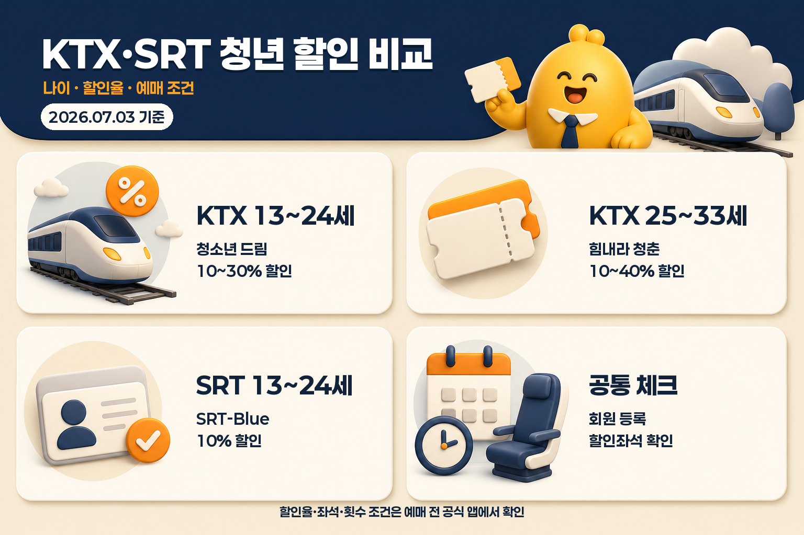
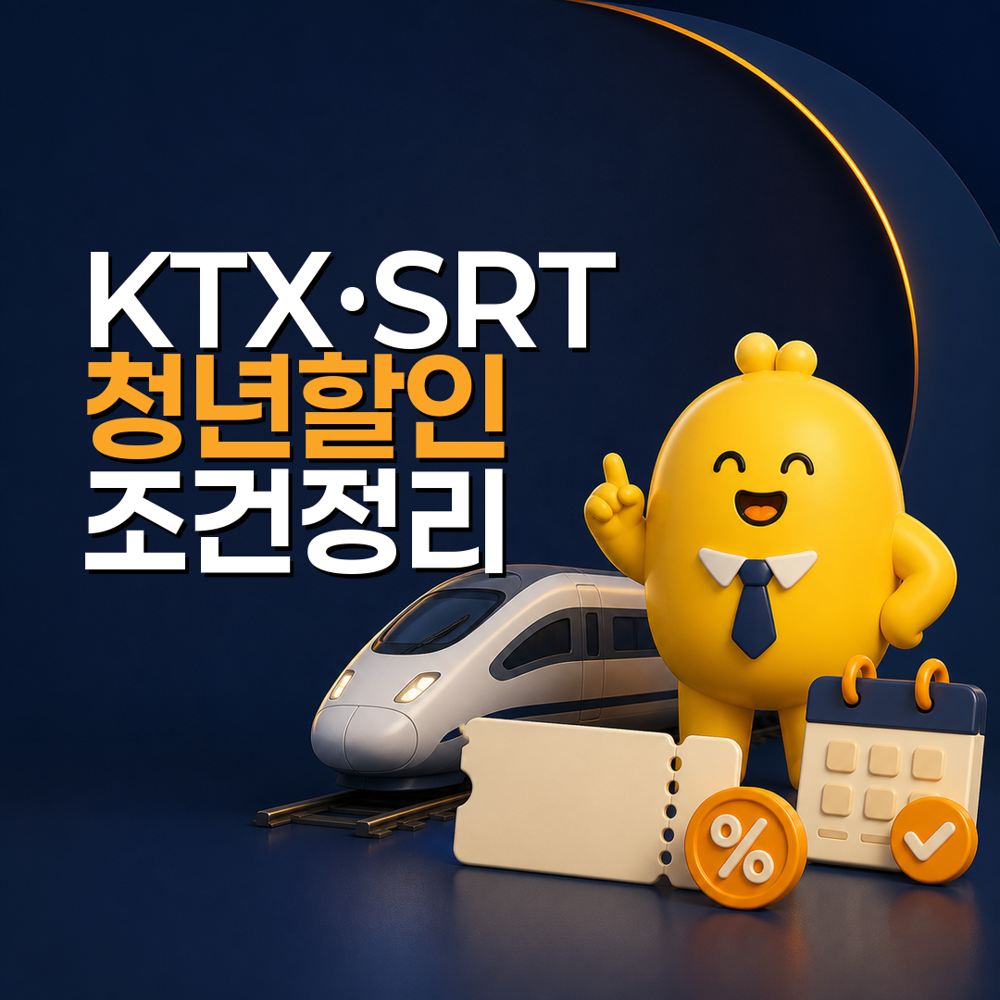

KTX·SRT 청소년·청년 할인 비교: 나이 기준, 할인율, 예매 조건 정리
기차를 자주 타는 학생·청년이라면 KTX와 SRT의 연령 할인 상품을 먼저 확인해볼 만합니다. 두 회사 모두 회원 대상 할인 상품이 있지만, 나이 기준, 할인율, 예매 방법, 이용 횟수가 조금씩 다릅니다.
2026년 7월 3일 공식 안내 확인 기준으로, KTX는 코레일의 청소년 드림과 힘내라 청춘을 나눠 보면 이해하기 쉽습니다. 청소년 드림은 13~24세, 힘내라 청춘은 25~33세 청년에게 적용되는 KTX 운임 할인 상품입니다. SRT는 SRT-Blue 청소년 할인에서 13세 이상 25세 미만 대상과 10% 할인 조건을 확인할 수 있습니다.
핵심은 “나이가 맞으면 항상 같은 할인”이 아니라 할인 대상좌석과 예매 조건이 맞아야 적용된다는 점입니다. 여행 날짜를 정하기 전에 공식 앱이나 홈페이지에서 할인승차권이 열려 있는지 먼저 확인하는 흐름으로 보면 됩니다.
기준일: 2026년 7월 3일
먼저 표로 보면
| 구분 | 공식 상품명 | 연령 기준 | 할인율 | 예매·이용 포인트 |
|---|---|---|---|---|
| KTX | 청소년 드림 | 13~24세 청소년 | KTX 열차별 승차율에 따라 10~30% | 코레일멤버십 회원 대상, 할인좌석이 있어야 적용 |
| KTX | 힘내라 청춘 | 25~33세 청년 | KTX 열차별 승차율에 따라 10~40% | 코레일멤버십 회원 대상, 할인은 운임 중심으로 확인 |
| SRT | SRT-Blue 청소년 할인 | 13세 이상 25세 미만 | 지정 좌석 10% | SR 회원 등록·인증 후 SRT 앱/홈페이지에서 예매 |

표만 보면 KTX는 청소년과 청년 구간이 나뉘고, SRT는 청소년 할인 하나를 먼저 보면 됩니다. 특히 SRT는 공식 안내에서 1일 2회, 월 8회 이용 가능 조건과 열차 출발 20분 전까지 예매 조건을 함께 안내합니다.
KTX 할인은 2개 상품으로 나눠 보면 쉽습니다
KTX에서 연령 할인을 볼 때는 청소년 드림과 힘내라 청춘을 구분하는 것이 먼저입니다.
청소년 드림은 코레일멤버십 회원 중 24세까지의 청소년을 대상으로 안내됩니다. 코레일 공식 안내 기준으로, 청소년 드림은 13~24세 청소년에게 KTX 운임 할인을 제공하는 상품입니다. 할인율은 KTX 열차별 승차율에 따라 10~30% 범위로 안내됩니다.
힘내라 청춘은 25~33세 청년을 대상으로 하는 KTX 운임 할인 상품입니다. 공식 안내에서는 KTX 열차별 승차율에 따라 지정된 좌석을 10~40%까지 할인한다고 설명합니다.
| KTX에서 확인할 것 | 왜 필요한가 |
|---|---|
| 코레일멤버십 로그인 | 두 상품 모두 회원 대상 할인으로 안내됨 |
| 청소년 드림 또는 힘내라 청춘 선택 | 연령 구간에 따라 상품명이 달라짐 |
| 할인 대상열차·좌석 | 열차별 승차율과 배정 좌석에 따라 할인 여부가 달라질 수 있음 |
| 운임·요금 구분 | 할인은 운임에 적용되는 구조로 안내되며 특실 등은 별도 확인 필요 |
| 중복할인 여부 | 다른 할인과 함께 적용되지 않는 조건이 있을 수 있음 |
KTX 할인은 “KTX라서 자동 할인”이라기보다, 예매 단계에서 할인상품을 선택하고 해당 열차에 할인좌석이 남아 있을 때 적용되는 방식으로 이해하면 좋습니다.
SRT는 SRT-Blue 청소년 할인을 확인합니다
SRT의 청소년 할인은 공식 할인제도 페이지에서 SRT-Blue로 안내됩니다. 대상은 13세 이상 25세 미만의 청소년 중 할인대상 등록과 인증절차를 마친 SR 회원입니다.
할인율은 SRT 열차별 승차율에 따라 지정된 좌석을 10% 할인하는 방식입니다. 이용방법은 열차 출발 20분 전까지 SR 홈페이지 또는 SRT 앱에서 할인승차권을 구매하는 흐름으로 안내됩니다. 이용 횟수는 1일 2회, 월 8회로 확인됩니다.
| SRT에서 확인할 것 | 내용 |
|---|---|
| 할인대상 등록·인증 | SR 회원이어도 할인대상 등록 절차가 필요할 수 있음 |
| 할인율 | SRT-Blue 청소년 할인은 10%로 안내됨 |
| 예매 경로 | SR 홈페이지 또는 SRT 앱 할인승차권 |
| 예매 마감 | 열차 출발 20분 전까지 구매 안내 |
| 이용 횟수 | 1일 2회, 월 8회 조건 확인 |
SRT 할인표는 상품별로 할인율과 대상이 다르므로, 청소년 할인은 SRT-Blue 행을 기준으로 보면 됩니다. 실제 예매할 때는 SRT 앱에서 본인에게 뜨는 할인상품명과 최종 결제금액을 함께 확인하는 것이 가장 안전합니다.
예매 전 체크리스트
- KTX를 탈지 SRT를 탈지 먼저 정했습니다.
- KTX라면 청소년 드림과 힘내라 청춘 중 내 연령대에 맞는 상품을 확인했습니다.
- SRT라면 SRT-Blue 할인대상 등록·인증 여부를 확인했습니다.
- 원하는 날짜와 시간대에 할인승차권이 열려 있는지 확인했습니다.
- 특실, 우등실, 서비스요금, 최저운임 같은 제외 조건을 확인했습니다.
- 할인승차권 변경·환불은 일반 승차권과 조건이 다를 수 있어 예매 전 안내를 확인했습니다.
- 할인 대상좌석은 조기 매진될 수 있으므로 일반승차권 가격도 함께 비교했습니다.
어떤 경우에 더 유리하게 볼 수 있을까
KTX와 SRT가 모두 선택 가능한 구간이라면 단순 할인율만 보지 말고 실제 결제금액을 비교하는 편이 좋습니다. KTX 힘내라 청춘은 최대 할인율이 더 커 보일 수 있지만, 해당 시간대에 할인좌석이 없으면 적용되지 않습니다. SRT-Blue는 할인율이 10%로 단순하지만, 앱에서 할인승차권이 열려 있고 시간대가 맞으면 확인이 빠릅니다.
예를 들어 같은 날 서울·수서권에서 부산 방향으로 이동한다고 가정하면, 아래 순서로 보면 됩니다.
| 비교 순서 | 확인 내용 |
|---|---|
| 1단계 | 출발역과 도착역이 KTX·SRT 모두 가능한지 확인 |
| 2단계 | 내 연령대가 KTX 청소년 드림·힘내라 청춘 또는 SRT-Blue에 맞는지 확인 |
| 3단계 | 각 앱에서 할인승차권 가격과 일반승차권 가격을 함께 조회 |
| 4단계 | 도착역 접근 시간과 교통비까지 포함해 총 이동비 비교 |
| 5단계 | 변경 가능성, 환불 조건, 좌석 선택 가능성을 확인 |
청년 교통비 절약 글에서 놓치기 쉬운 부분은 “할인율”보다 “총 이동비”입니다. 역까지 가는 지하철·버스·택시비, 출발 시간, 도착 후 이동까지 더하면 할인율이 조금 낮아도 전체 비용은 달라질 수 있습니다.
자주 묻는 질문
KTX 청소년 드림과 힘내라 청춘은 무엇이 다른가요?
가장 큰 차이는 연령대입니다. 청소년 드림은 13~24세 청소년, 힘내라 청춘은 25~33세 청년에게 적용되는 KTX 할인상품으로 안내됩니다. 할인율도 청소년 드림은 10~30%, 힘내라 청춘은 10~40% 범위로 확인됩니다.
SRT 청소년 할인은 몇 퍼센트인가요?
SRT 공식 할인제도 페이지의 SRT-Blue 청소년 할인은 10%로 안내됩니다. 대상은 13세 이상 25세 미만의 청소년 중 등록과 인증을 마친 SR 회원입니다.
나이만 맞으면 항상 할인되나요?
할인 대상에 해당하더라도 열차별로 배정된 할인좌석이 있어야 합니다. 특히 SRT는 할인 대상좌석이 조기 매진될 수 있고, 할인율도 사전 공지 없이 변경될 수 있다고 안내합니다. KTX도 예매 화면에서 해당 할인상품과 좌석 여부를 확인해야 합니다.
특실도 같은 비율로 할인되나요?
할인은 보통 운임 중심으로 봐야 합니다. SRT는 특실 서비스요금은 할인에서 제외되고 일반실 운임에 대해 할인 제공한다고 안내합니다. KTX도 할인은 운임에 적용되는 구조로 안내되므로 특실·우등실 이용 시 실제 할인 적용 금액은 예매 화면에서 확인하세요.
친구에게 할인승차권을 대신 줄 수 있나요?
할인승차권은 대상자 본인 사용을 전제로 봐야 합니다. SRT 공식 안내는 등록된 사람 외 다른 사람이 이용하면 할인금액 회수와 추가 부가운임, 할인자격 제한이 있을 수 있다고 설명합니다. KTX도 회원 대상 할인상품이므로 본인 이용 기준으로 확인하는 것이 안전합니다.
마무리 정리
KTX와 SRT의 청소년·청년 할인은 나이만 보는 제도가 아니라, 회원 등록, 할인상품 선택, 할인좌석, 예매 경로를 함께 확인해야 하는 상품입니다.
KTX는 13~24세라면 청소년 드림, 25~33세라면 힘내라 청춘을 먼저 보면 됩니다. SRT는 13세 이상 25세 미만이라면 SRT-Blue 청소년 할인을 확인하면 됩니다.
여행 날짜가 정해졌다면 코레일 또는 SRT 앱에서 할인승차권을 먼저 조회해보세요. 할인율보다 중요한 것은 내가 탈 시간대에 실제로 적용되는 최종 결제금액입니다.
자료 기준일: 2026년 7월 3일 출처: 코레일 청소년 드림 안내, 코레일 힘내라 청춘 안내, 코레일 승차권예매 할인상품 메타데이터, SR 할인제도 SRT-Blue 청소년 할인 안내 안내: 이 글은 공식 안내를 바탕으로 한 일반 정보 정리입니다. 할인율, 할인좌석, 예매 가능 시간, 이용 횟수, 회원 인증 조건은 예매 시점의 코레일·SRT 공식 앱과 홈페이지에서 최종 확인해야 합니다.
